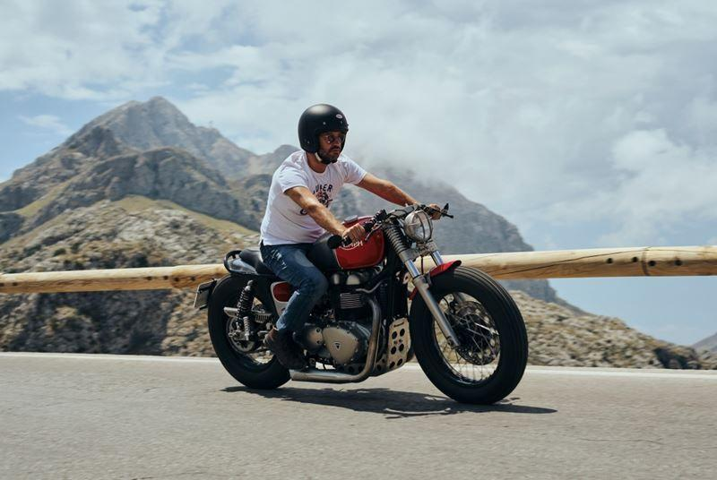
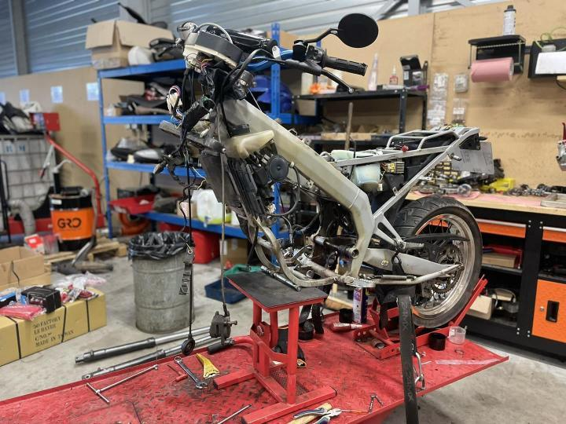
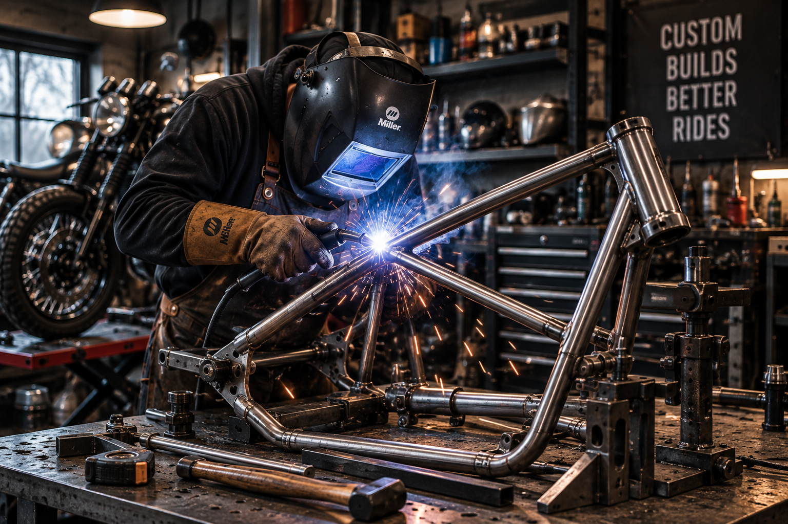
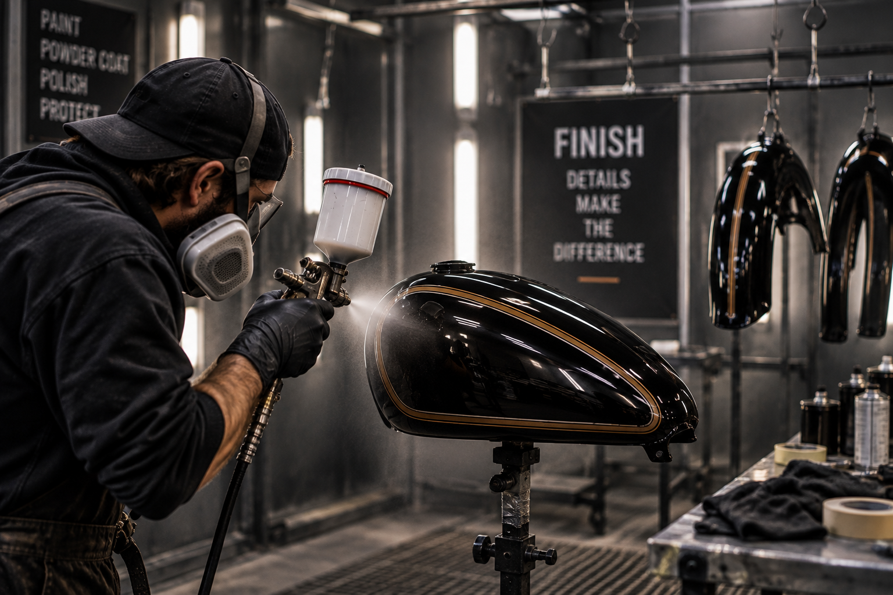
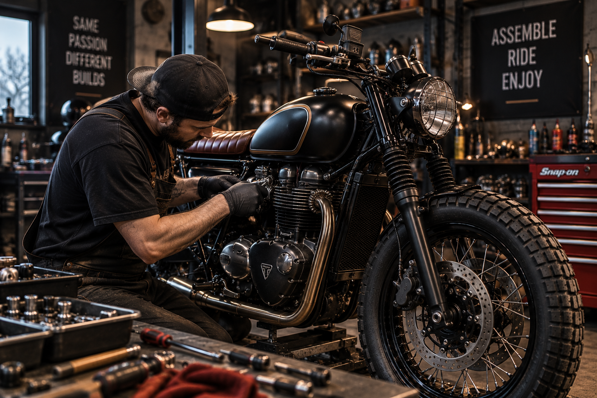
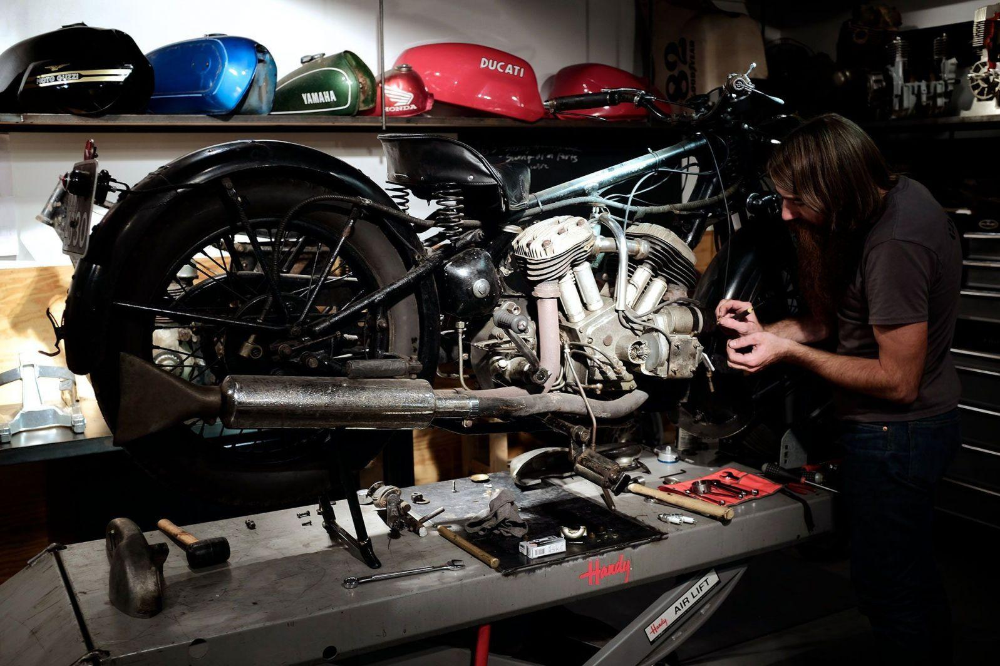
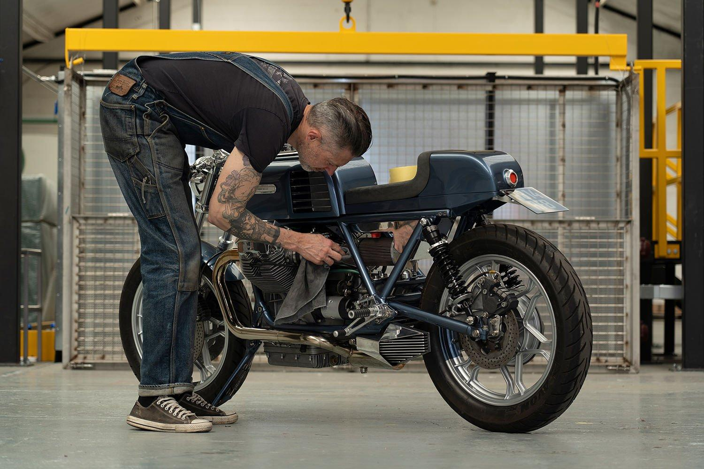
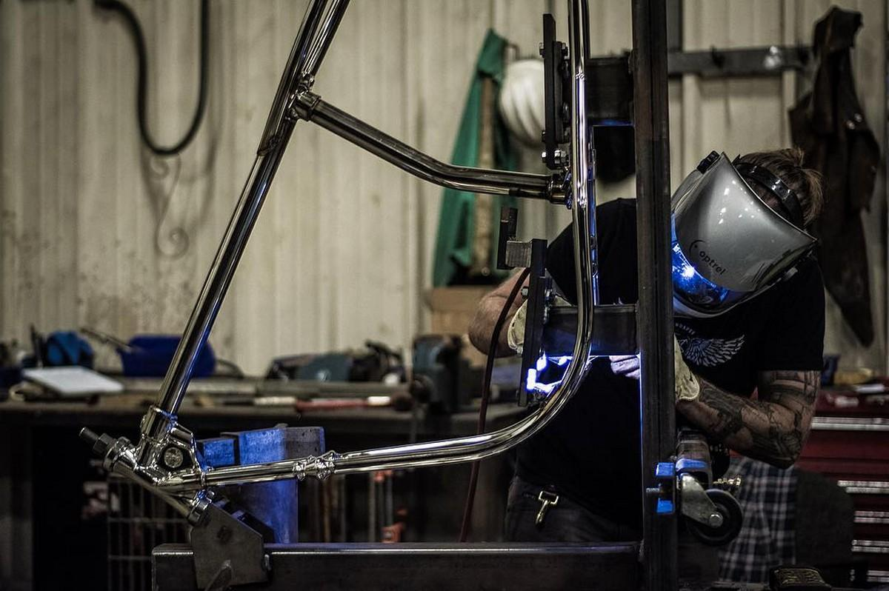
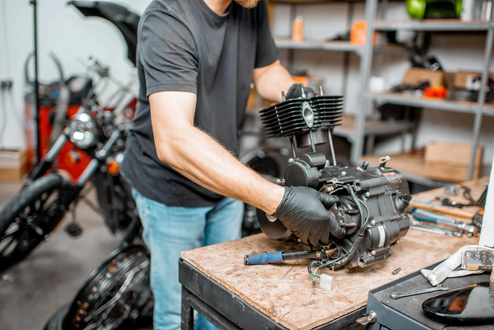

RESTORE
THE MACHINE.
From tired classics to complete custom builds, every project begins with understanding the motorcycle.

THE BUILD TIMELINE
Stripping the machine down to the bare frame.

Custom metalwork, welding, frame modification.

Paint, powder coat, plating, and final materials.

Wiring, testing, and final motorcycle assembly.

THE PARTS TABLE
ENGINE BLOCK
Complete teardown, vapor blasting, and rebuilding of the motor for reliable performance.
SELECT A BUILD TYPE

CLASSIC RESTORATION
Returning a vintage machine back to factory specifications. This involves sourcing original parts, repairing damaged components, and applying period-correct finishes to preserve history.

FULL CUSTOM BUILD
Reimagining the motorcycle entirely. Modifying the frame, upgrading suspension, rewiring, and hand-crafting new bodywork to create a unique Cafe Racer, Scrambler, or Tracker.

CUSTOM FABRICATION
Engineering metal solutions for unique builds. Shaping aluminum tanks, welding custom exhausts, and creating mounting brackets that blend seamlessly into the machine.

ENGINE REBUILDING
Restoring power and reliability. Disassembly, vapor blasting, replacing seals and bearings, valve jobs, and careful reassembly to ensure the motor runs flawlessly.
BEFORE & AFTER

EVERY BUILD STARTS WITH
A CONVERSATION.
Bring us the motorcycle, the idea, or simply the question.